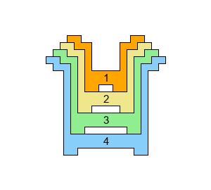

Problem 907: "Stacking Cups" (level 12)
An infant's toy consists of $n$ cups, labelled $C_1,\dots,C_n$ in increasing order of size.

The cups may be stacked in various combinations and orientations to form towers. The cups are shaped such that the following means of stacking are possible:
-
Nesting: $C_k$ may sit snugly inside $C_{k+1}$.

-
Base-to-base: $C_{k+2}$ or $C_{k-2}$ may sit, right-way-up, on top of an up-side-down $C_k$, with their bottoms fitting together snugly.

-
Rim-to-rim: $C_{k+2}$ or $C_{k-2}$ may sit, up-side-down, on top of a right-way-up $C_k$, with their tops fitting together snugly.

-
For the purposes of this problem, it is
not
permitted to stack
both
$C_{k+2}$ and $C_{k-2}$ rim-to-rim on top of $C_k$, despite the schematic diagrams appearing to allow it:

Define $S(n)$ to be the number of ways to build a single tower using all $n$ cups according to the above rules.
You are given $S(4)=12$, $S(8)=58$, and $S(20)=5560$.
Find $S(10^7)$, giving your answer modulo $1\,000\,000\,007$.